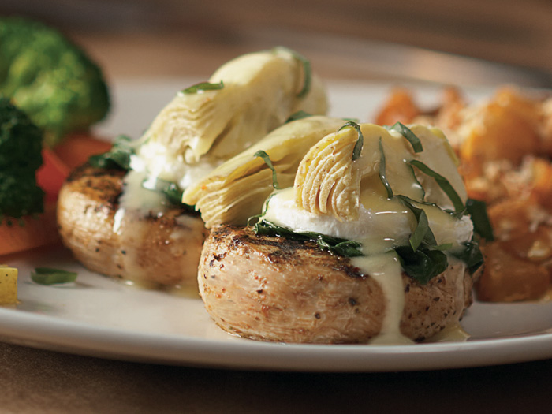

Lily's Chicken

What is Lily's Chicken?
Lily's Chicken is an entree made popular by the restaurant company known as Bonefish Grille. This dish has become a favorite of mine and it includes different sides based on the season. What makes this dish stand out is the grilled chicken topped with a lemon basil sauce, quartered artichoke hearts and baby spinach.
Ingredients
- 1 Cup Uncooked Jasmine Rice
- 3 Large Boneless, Skinless Chicken Breasts. Thawed and Halved
- 1lb Fresh Baby Spinach
- Unsalted Butter
- 1 Large Garlic Clove, minced
- 6oz Fresh Goat Cheese
- 10 Quartered Artichoke Hearts
- 1 Lemon, Zested and Halved
- 2tbsp Freshly chopped Basil
- 3/4 cup Chicken Stock
- 1/2 Cup White Wine (I suggest Riesling)
- 3tbsp Flour
How to make Lily's Chicken!
- Preheat the oven to 400 degrees
- Start cooking the rice, using it's own instructions
- Heat olive oil in a dutch oven over medium high heat. Sprinkle chicken evenly with the seasonings and sear about 2 minutes on each side, or until golden. Turn the heat to medium low, and deglaze with a splash of your wine. Cook until chicken is done all the way through; mine took a good 20 minutes. Remove chicken and set aside
- Once the chicken is removed, stir in the rest of the wine and add the chicken stock, lemon zest, juice of the lemon and basil. Make sure to scrape up all those little yummy bits left from the chicken. Stir in the flour and cook off for about 5 minutes on low. Adjust seasonings accordingly. Add the artichoke hearts, drained, to the sauce just before serving.
- Meanwhile, heat a splash of olive oil and the butter in a large saute pan, along with the minced garlic. Add in the spinach and cook until it is nicely wilted.
Congratulations and enjoy your copycat Lily's Chicken!
Back to Home!